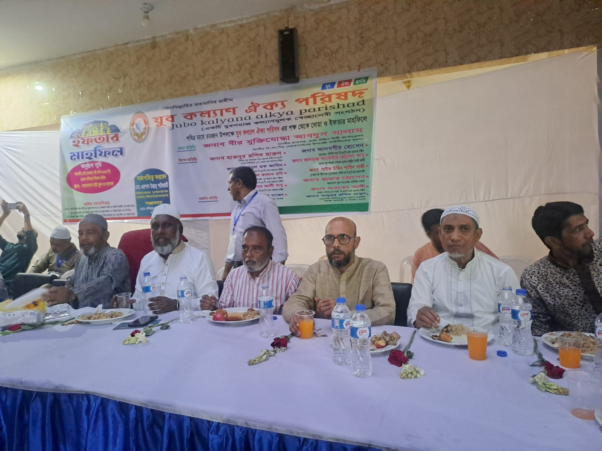

ডেস্ক রিপোর্ট | রিপোর্টার: মিসবাহুল হাসান
ঢাকা: পবিত্র মাহে রমজান উপলক্ষে সামাজিক ও মানবিক সম্প্রীতি জোরদারের লক্ষ্যে দোয়া ও ইফতার মাহফিল আয়োজন করেছে যুব কল্যাণ ঐক্য পরিষদ।
শনিবার (৭ মার্চ ২০২৬) বিকাল ৪টায় রাজধানীর আরামবাগ হাই স্কুল ও কলেজ প্রাঙ্গণে এ দোয়া ও ইফতার মাহফিল অনুষ্ঠিত হয়।
অনুষ্ঠানে প্রধান অতিথি হিসেবে উপস্থিত থাকার সম্মতি জ্ঞাপন করেন বীর মুক্তিযোদ্ধা আবদুস সালাম। তিনি ঢাকা দক্ষিণ সিটি কর্পোরেশন সংশ্লিষ্ট একটি শিক্ষা প্রতিষ্ঠানের প্রিন্সিপাল এবং বিএনপি চেয়ারপার্সনের উপদেষ্টা পরিষদের সদস্য।
বিশেষ অতিথি হিসেবে উপস্থিত ছিলেন বিএনপি ঢাকা মহানগর দক্ষিণের সিনিয়র যুগ্ম আহ্বায়ক হারুনুর রশিদ হারুন।
অনুষ্ঠানে সভাপতিত্ব করেন যুব কল্যাণ ঐক্য পরিষদের প্রতিষ্ঠাতা চেয়ারম্যান মো. এমরাদ উল্লাহ পাটোয়ারী। অনুষ্ঠান সঞ্চালনা ও সার্বিক ব্যবস্থাপনায় ছিলেন সংগঠনের সভাপতি মোমিনুল ইসলাম রুনু এবং মতিঝিল থানা বিএনপির যুগ্ম আহ্বায়ক সাইফ উদ্দিন শাহিন গাজী।
এছাড়াও অনুষ্ঠানে উপস্থিত ছিলেন মতিঝিল থানা বিএনপির আহ্বায়ক আলমগীর হোসেন, যুবদলের সাবেক যুগ্ম সাধারণ সম্পাদক আনোয়ার হোসেন আনু, মতিঝিল থানা বিএনপির যুগ্ম আহ্বায়ক জাহিদুল হক জাহিদ, ৯ নম্বর ওয়ার্ড মতিঝিলের সভাপতি বাবর আলী বাবু, সাধারণ সম্পাদক আহমেদ আলী এবং আবুল কালাম রনি।
অনুষ্ঠানে সম্মানিত অতিথি হিসেবে আরও উপস্থিত ছিলেন বিশিষ্ট ব্যবসায়ী ও সমাজসেবক মাহেদুল রশিদ মাজেদ, মামুনুর রশিদ মামুন এবং চলচ্চিত্র নির্মাতা ও সিনেমা চত্বরের প্রতিষ্ঠাতা হাফিজউদ্দিন মুন্না।
সংগঠনের নেতৃবৃন্দ জানান, পবিত্র রমজানের তাৎপর্য তুলে ধরা, দেশ ও জাতির কল্যাণ কামনা এবং সমাজে পারস্পরিক সম্প্রীতি জোরদারের লক্ষ্যেই এই দোয়া ও ইফতার মাহফিলের আয়োজন করা হয়েছে।